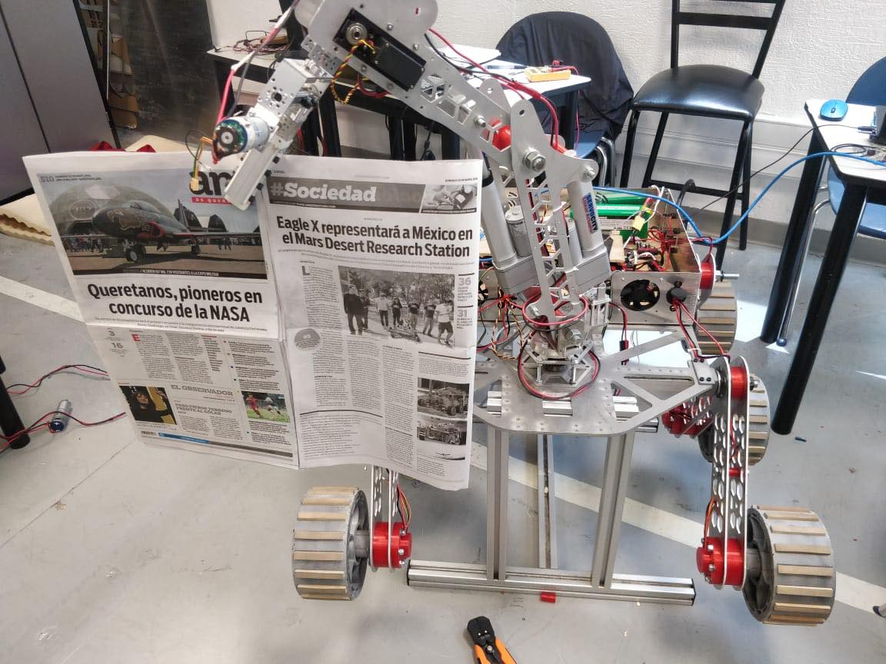
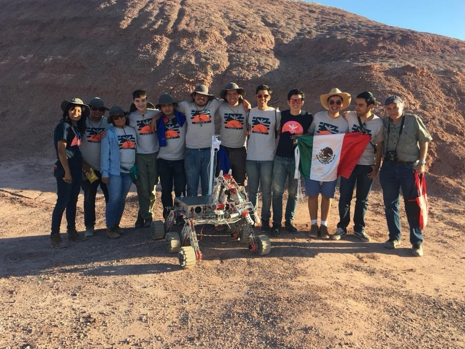
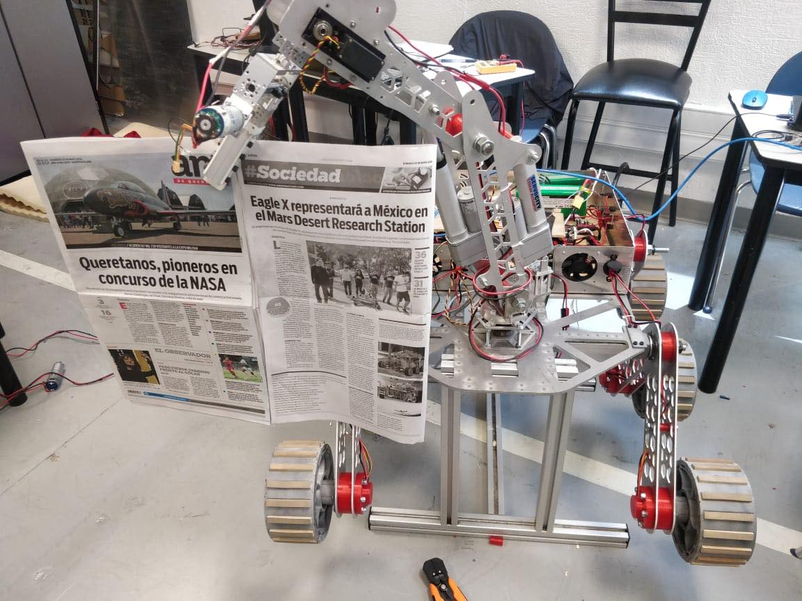
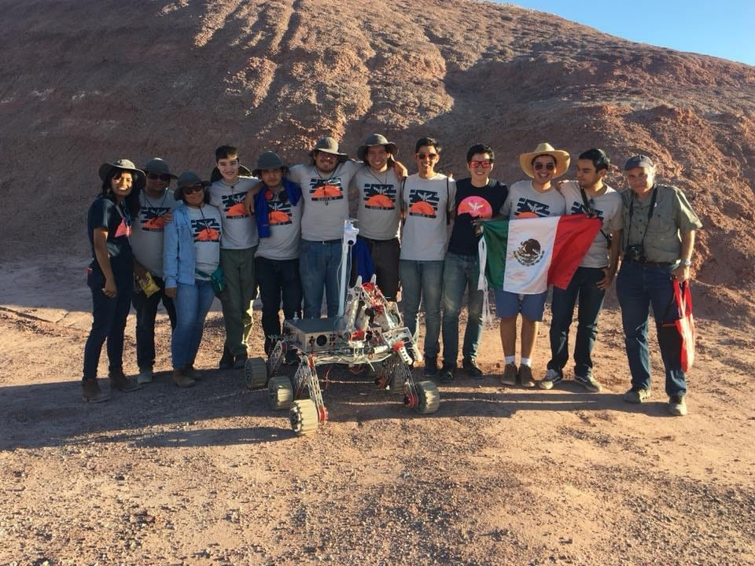

Perseverance Rover
El Perseverance Rover de la NASA investiga un intrigante lecho rocoso marciano
Leer Más...
Somos un grupo estudiantil multidisciplinario que realiza varios proyectos de desarrollo tecnológico e investigación relacionados con la robótica y la ingeniería aeroespacial. Como proyecto principal tenemos el diseño integral de un robot tipo mars rover empezando desde su conceptualización, el diseño mecánico, electrónico y de software necesarios para su manufactura con el fin de poder explorar de forma autónoma y a control remoto un área designada para hacer pruebas y determinar la existencia de vida.
Eagle X ha sido reconocido por participar en congresos a nivel nacional logrando vinculaciones internacionales y con empresas, convirtiéndose así en un referente entre los equipos estudiantiles que impulsan el sector espacial en México.
Nuestra visión es poder continuar acercando a estos campos a todos los estudiantes del Tecnológico de Monterrey, encontrando nuevos y mayores retos que impulsen y nos acerquen a ser importantes actores en los campos de la robótica y la ingeniería aeroespacial.
• Tres estudiantes de profesional dan inicio al grupo para competir
en el University Rover Challenge.
• Iniciando bajo el nombre de Tec Mars Rover
• Se unen más ingenierías al proyecto, entre las cuales estan Mecanica y Biotecnología
• Por votación el grupo se renombra a Eagle X Robotics
• Ganadores del Vive conCiencia 2017.
• El equipo fue calificado para participar en el University Rover Challenge,
convirtiendonos en el primer equipo en LatinoAmerica en participar en este evento.
• Nos presentamos con diferentes equipos a nivel nacional e internacional convirtiendonos en un foco de inspiración
para varios jovenes.
Entre los cuales están:
- UAG
- Robocol
- UAQ
- Quantium Robotics
Entre otros.
• Logramos pasar el URC, como finalistas por tercera vez consecutiva.
La competencia es cancelada por la pandemía.
•Dos de los carteles de investigación fueron seleccionados para los carteles informativos del CONACES 2021
• Participamos en la certificación de Tripoli Rocketry Association.
Primer equipo en Tec Campus Qro en volar cohetes y certificar en manejo de motores de cohetería
 




El Perseverance Rover de la NASA investiga un intrigante lecho rocoso marciano
Leer Más...Desde la órbita terrestre hasta la Luna y Marte, explore el mundo de los vuelos espaciales tripulados con la NASA cada semana en el podcast oficial del Centro Espacial Johnson en Houston, Texas. Escuche conversaciones detalladas con los astronautas, científicos e ingenieros que lo hacen posible.
Leer Más...A medida que los astronautas exploren la región del Polo Sur de la Luna durante las misiones de Artemis, podrán ir más lejos y realizar más ciencia que nunca gracias a un nuevo Lunar Terrain Vehicle (LTV).
Leer Más...Una nueva ronda de premios ayudará a los investigadores universitarios a desarrollar ideas de tecnología innovadora para apoyar la exploración en las condiciones extremas del espacio, desde la Luna hasta el espacio profundo y más allá.
Leer Más...